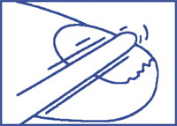
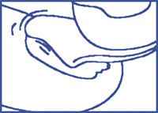
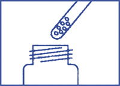
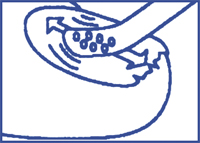
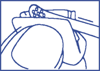

|
 |
| ЛОЦЕРИЛ® (LOCERYL®) amorolfine | ||||||||||||||||
|
Клинико-фармакологическая группа: Противогрибковый препарат для наружного применения Номер и дата регистрации: П N012558/01 от 28.04.11 Код ATX: D01AE16 |
Владелец регистрационного удостоверения: зарегистрировано Представительство: | |||||||||||||||
Форма выпуска, состав и упаковка ◊ Лак для ногтей 5% в виде прозрачной, бесцветной или почти бесцветной жидкости.
Вспомогательные вещества: сополимер метилметакрилата, триметиламмониоэтилметакрилата хлорида и этилакрилата [2:0.2:1] - 143 мг, триацетин - 12 мг, бутилацетат - 57 мг, этилацетат - 172 мг, этанол абсолютный - 552 мг. 2.5 мл - флаконы темного стекла (1) с крышкой пластиковой, имеющей встроенный аппликатор, и вкладышем полимерным; с 30 пилками для ногтей и 30 тампонами, смоченными изопропиловым спиртом (в герметично запаянных конвертах) - коробки картонные с контролем первого вскрытия. | ||||||||||||||||
| ||||||||||||||||
Описание препарата основано на официально утвержденной инструкции по применению и утверждено компанией-производителем для издания 2023 г. | ||||||||||||||||
Фармакологическое действие |
Фармакокинетика |
Показания |
Режим дозирования |
Побочное действие |
Противопоказания |
Беременность и лактация |
Особые указания |
Передозировка |
Лекарственное взаимодействие |
Условия хранения и сроки годности |
Условия реализации
Фармакологическое действие
Противогрибковый препарат для наружного применения. Оказывает фунгистатическое и фунгицидное действие, обусловленное повреждением цитоплазматической мембраны гриба путем нарушения биосинтеза стеролов. Снижается содержание эргостерола, накапливается содержание атипичных стерических неплоских стеролов. Обладает широким спектром противогрибкового действия. Высокоактивен в отношении как наиболее распространенных, так и редких возбудителей грибковых поражений ногтей:
Фармакокинетика
При нанесении на ногти проникает в ногтевую пластинку и далее в ногтевое ложе (практически полностью в течение первых 24 ч). Эффективная концентрация сохраняется в пораженной ногтевой пластинке в течение 7-10 дней уже после первой аппликации. Системная абсорбция незначительна: концентрация в плазме находится ниже предела чувствительности методов определения (менее 0.5 нг/мл). Показания
Режим дозирования
Наружно. Наносить на пораженные ногти пальцев рук или ног 1-2 раза в неделю следующим образом: 1. До применения препарата удалить по возможности пораженные участки ногтя (особенно с его поверхности) с помощью прилагаемой пилки для ногтей.  2. Затем поверхность ногтя очистить и обезжирить прилагаемым тампоном, смоченным спиртом.  Перед каждым последующим применением препарата необходимо также проводить обработку пораженных ногтей пилкой и затем удалять оставшийся слой лака спиртовым тампоном. 3. Опустить встроенный в крышку аппликатор во флакон с лаком и затем аккуратно вынуть его, не стирая излишки лака о горлышко флакона.  4. С помощью аппликатора нанести лак ровным слоем на всю поверхность пораженного ногтя.  Вышеописанную процедуру повторить для каждого пораженного ногтя. 5. Дать лаку высохнуть в течение 3 мин. 6. Протереть аппликатор тампоном, использованным для очистки ногтя, избегая при этом контакта обработанных ногтей и тампона. Плотно закрыть флакон сразу же по окончании процедуры. Использованный тампон выбросить.  Нанесение декоративного лака для ногтей возможно не ранее чем через 10 мин после применения лака для ногтей Лоцерил®. При повторном применении лака Лоцерил® необходимо аккуратно удалить с ногтей оставшийся декоративный лак, затем с помощью прилагаемых пилок обработать пораженные участки ногтей и удалить оставшийся слой лака спиртовыми тампонами. По окончании процедуры тщательно вымыть руки. В случае, если лак наносился на ногти на руках, следует дождаться сначала его полного высыхания. После высыхания лака разрешается регулярное мытье рук и ног с использованием мыла. Лечение следует продолжать до регенерации ногтя и полного излечения пораженного участка. Средняя длительность лечения составляет 6 месяцев для ногтей на руках и 9-12 месяцев для ногтей на ногах. Ввиду медленного роста ногтевых пластин первые признаки улучшения могут стать заметными только после 2-3 месяцев применения препарата. При отсутствии признаков улучшения по истечении 3 месяцев рекомендуется проконсультироваться с врачом. Побочное действие
При применении препарата Лоцерил® нежелательные реакции отмечаются редко. Такие повреждения ногтей, как изменение цвета, разрушение ногтевых пластин, ломкость ногтей, могут быть следствием грибкового поражения ногтей. Все нежелательные реакции, отмеченные при применении препарата Лоцерил®, представлены в таблице ниже в соответствии со следующими категориями частоты: очень часто (≥1/10), часто (≥1/100-<1/10), нечасто (≥1/1000-<1/100), редко (≥1/10000-<1/1000), очень редко (<1/10000), частота неизвестна (не может быть оценена на основании имеющихся данных).
* Данные пострегистрационных наблюдений. Если любые из указанных побочных эффектов усугубляются или отмечаются любые другие побочные эффекты, следует немедленно сообщить об этом врачу. Применение при беременности и кормлении грудью
Данные о применении аморолфина при беременности и/или в период грудного вскармливания ограничены. Исследования на животных показали наличие репродуктивной токсичности при пероральном применении препарата в высоких дозах. Ввиду крайне низкого системного воздействия аморолфина при его наружном применении в форме лака для ногтей степень риска для плода незначительна. Неизвестно, проникает ли аморолфин в грудное молоко. Ввиду ограниченности данных о применении аморолфина у беременных и кормящих женщин, применение препарата при беременности и в период грудного вскармливания не рекомендуется. Особые указания
Пилки, использованные для обработки пораженных ногтей, не следует использовать для обработки здоровых ногтей. Лица, работающие с органическими растворителями, должны надевать непроницаемые перчатки для защиты ногтей, покрытых лаком. Во время лечения следует избегать использования накладных искусственных ногтей. Препарат содержит этанол, поэтому слишком частое или неправильное его нанесение может привести к появлению раздражения или сухости кожи вокруг ногтя. Не следует наносить лак Лоцерил® на кожу вокруг ногтя. Тампон содержит легко воспламеняющееся вещество. Следует избегать попадания лака в глаза, уши и на слизистые оболочки. При попадании лака в глаза необходимо немедленно промыть их водой. Пациентам с состояниями, предрасполагающими к развитию грибковых поражений ногтей (нарушение периферического кровообращения, сахарный диабет, иммунодефициты), а также пациентам с дистрофией ногтя или разрушенной ногтевой пластинкой, псориазом или другими хроническими заболеваниями кожи следует обратиться к врачу. В случае если разрушению или грибковому поражению подвержено более 2/3 ногтевой пластинки, необходимо также обратиться к врачу для назначения сопутствующей пероральной терапии. При возникновении системных и местных аллергических реакций следует немедленно прекратить применение лака Лоцерил® и обратиться к врачу. Используя жидкость для снятия лака, необходимо удалить препарат с ногтей. Не следует наносить препарат повторно. Использование в педиатрии Клинические данные о применении препарата у пациентов детского возраста отсутствуют, поэтому не следует назначать Лоцерил® детям. Влияние на способность к управлению транспортными средствами и механизмами Препарат не оказывает влияния на способность к управлению транспортными средствами и работе с механизмами. Передозировка
При наружном применении препарата развитие системных признаков передозировки не ожидается. Лечение: при случайном проглатывании препарата необходимо провести соответствующую симптоматическую терапию. |
||||||||||||||||
Вернуться наверх |
||||||||||||||||
Copyright © Справочник Видаль «Лекарственные препараты в России», Москва, Россия